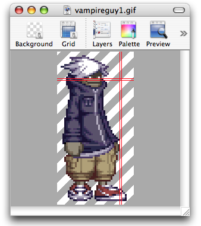

Using the alignment crosshair
When you're zoomed in, it may be difficult to keep your pixels straight. Pixen's alignment crosshair can help you do this. Take a look:

To enable the alignment crosshair:
Use the View > Show Alignment Crosshair (^⌘A) menu item.
Once it's enabled, the crosshair will expand its inner square while you draw with certain tools to help you draw lines, ellipses, and rectangles.